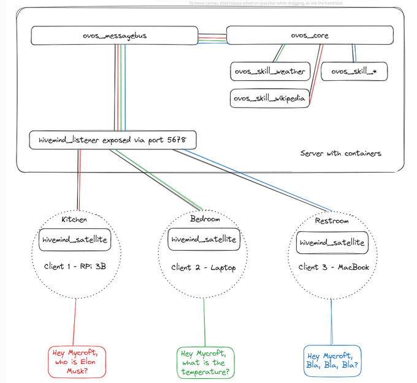

Remote Agents with OpenVoiceOS¶
While OpenVoiceOS is designed primarily for local-first usage, more advanced deployments—like hosting agents in the cloud, connecting multiple voice satellites, or enabling multi-user access through a web frontend—are made possible via the HiveMind companion project.
HiveMind Server¶
HiveMind is a distributed voice assistant framework that allows you to expose AI Agents (either full ovos-core installs or just individual personas) over a secure protocol.
💡 Unlike the lightweight
persona-server, HiveMind is designed for trusted, networked setups.
Key Features:
-
Secure Access: Communicates over the HiveMind protocol, which supports authentication, encryption and granular permissions — safe for exposing OVOS to remote clients or satellites.
-
Agent Plugins: Agent plugins integrate the HiveMind protocol with various frameworks, including OpenVoiceOS. Keep your existing infrastructure even when you totally replaces the brains!
-
Multi-User Ready: Great for use in cloud hosting, web portals, or enterprise environments where access control is critical.
-
Composable: Let local personas delegate questions to a smarter remote OVOS instance.

Typical Use-cases:
-
🏡 Running OpenVoiceOS on a powerful server or in the cloud.
-
🛰️ Connecting lightweight devices (satellites).
-
📱 Remote access to OpenVoiceOS.
-
🧑🤝🧑 Serving multiple users or applications concurrently.
Check out the HiveMind documentation for more info
HiveMind Personas¶
The hivemind-persona-agent-plugin project allows you to expose a single persona—not the full OVOS stack—through hivemind
This enables you to deploy AI agents for external use without needing a full OVOS assistant.
Why Use It?¶
-
Minimal attack surface (persona only, no full assistant features).
-
Can be queried remotely using the HiveMind protocol.
💡 This is not the same as
persona-server.hivemind-persona-agent-pluginuses a secure protocol (HiveMind), whileovos-persona-serveruses insecure HTTP.
Server Configuration¶
in your hivemind config file ~/.config/hivemind-core/server.json
{
"agent_protocol": {
"module": "hivemind-persona-agent-plugin",
"hivemind-persona-agent-plugin": {
"persona": {
"name": "Llama",
"solvers": [
"ovos-solver-openai-plugin"
],
"ovos-solver-openai-plugin": {
"api_url": "https://llama.smartgic.io/v1",
"key": "sk-xxxx",
"system_prompt": "You are helpful, creative, clever, and very friendly."
}
}
}
}
}
The persona value may be either an inline config dict (as above) or a path to an
ovos-persona JSON file (string, ~ is
expanded).
Then install the plugin and start the hub:
pip install hivemind-persona-agent-plugin
hivemind-core add-client # provision a client (one-time)
hivemind-core listen # start the server
💡 Unlike
hivemind-ovos-agent-plugin, the persona agent needs no runningovos-coreand no OVOS messagebus — it answers straight from the configured persona. The"module"value underagent_protocolmust match the plugin's entry-point name exactly (hivemind-persona-agent-plugin), and the same string is reused as the key holding its config.
HiveMind as a Solver Plugin¶
Want your local assistant to ask a remote one when it's stuck? You can!
The hivemind-bus-client can function as a solver plugin, allowing you to:
-
🦾 Delegate processing to a more powerful/secure server for specific tasks.
-
🌍 Handle outages: Handle intermitent local agent failures from other solver plugins in your persona definition
-
🤝 Use remote hivemind agents in a collaborative AI / MoS (mixture-of-solvers) setup.
🤖 “When in doubt, ask a smarter OVOS.”
For usage with persona, use "ovos-solver-hivemind-plugin" for the solver id
{
"name": "HiveMind Agent",
"solvers": [
"ovos-solver-hivemind-plugin"
],
"ovos-solver-hivemind-plugin": {"autoconnect": true}
}
You can also use it in your own python projects
from ovos_hivemind_solver import HiveMindSolver
bot = HiveMindSolver()
bot.connect() # connection info from identity file
print(bot.spoken_answer("what is the speed of light?"))
Chaining Components for Flexible Deployments¶
HiveMind and persona-server can be combined to bridge secure and insecure environments, depending on your needs:
-
expose existing OpenAI/Ollama servers to hivemind satellites securely
- connect hivemind satellites directly to existing LLM apps (eg. ollama)
-
expose a remote
hivemind-coreto local insecure ollama/openai endpoints- eg. to integrate hivemind into HomeAssistant
-
expose a localhost
ovos-core/persona.jsonto local insecure ollama/openai endpoints-
half-way compromise, does not expose the full messagebus and does not require hivemind
-
easier to setup and configure
-
| Use Case | Tool | Secure? | API Type | Notes |
|----------------------------------|------------------------|---------|------------------------|------------------------------------------------------|
| Local interface + Persona | ovos-persona-server + persona.json | ❌ | OpenAI-compatible | Great for quick setups, not public exposure,HTTP, no auth |
| Local interface + OpenVoiceOS |ovos-persona-server+ovos-solver-bus-plugin| ❌ | OpenAI-compatible | OpenVoiceOS bus must be exposed toovos-persona-server,HTTP, no auth |
| Local interface + HiveMind Agent |ovos-persona-server+ovos-solver-hivemind-plugin| ❌ | OpenAI-compatible | Same as above, but for any remote hivemind agent,HTTP, no auth |
| Secure remote OpenVoiceOS agent |hivemind-core+hivemind-ovos-agent-plugin+ovos-core| ✅ | HiveMind protocol | Auth, encryption, granular permissions, HTTP or Websockets |
| Secure remote Persona agent |hivemind-core+hivemind-persona-agent-plugin+persona.json` | ✅ | HiveMind protocol | Auth, encryption, granular permissions, HTTP or Websockets |
The first 3 examples allow us to integrate our Agents with HomeAssistant via the Ollama Integration
The last 2 examples allow us to integrate with HiveMind ecosystem and all the existing satellite implementations
⚠️ Related (Insecure) Alternatives¶
While useful for experimentation, some other persona access methods are not secure for remote use:
🦙 ovos-persona-server:
-
✅ Compatible with OpenAI/Ollama APIs.
-
❌ HTTP only, not encrypted or authenticated.
-
✅ Useful to expose personas to HomeAssistant, OpenWebUI, and similar local network tools.
🏠 HomeAssistant + ovos-persona-server:
-
🗣️ Can route HomeAssistant wyoming satellites to an OVOS persona.
-
❌ Uses Wyoming protocol, which lacks hivemind's security features.